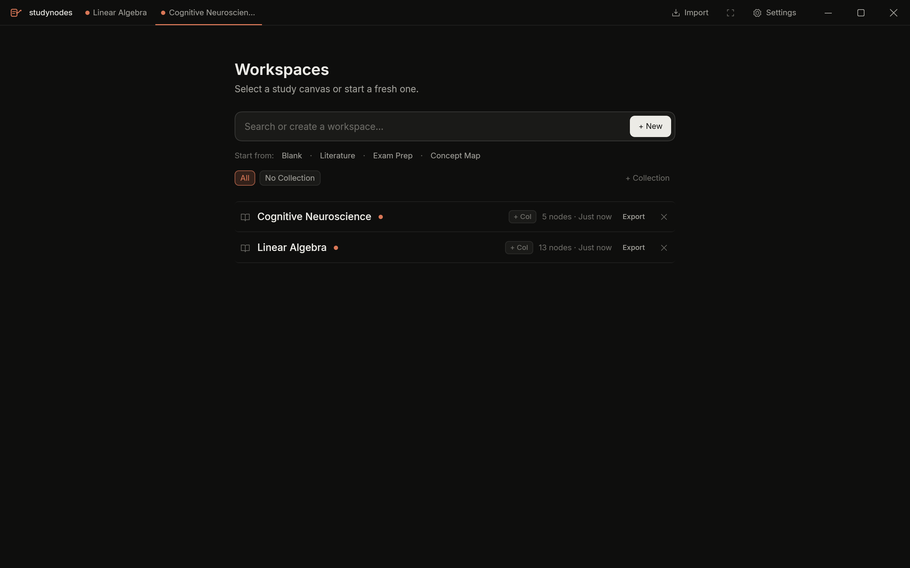
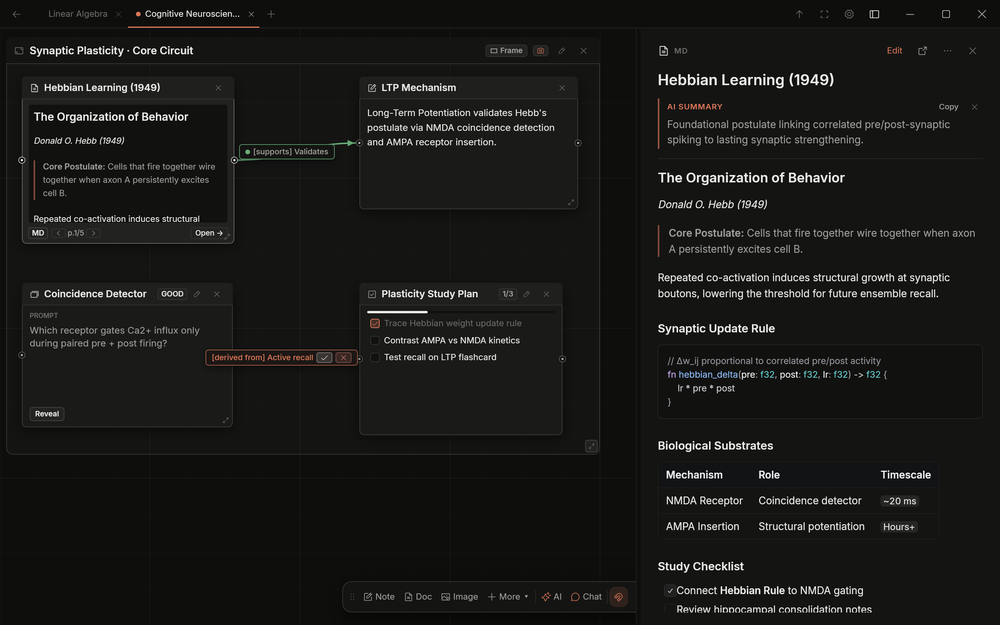
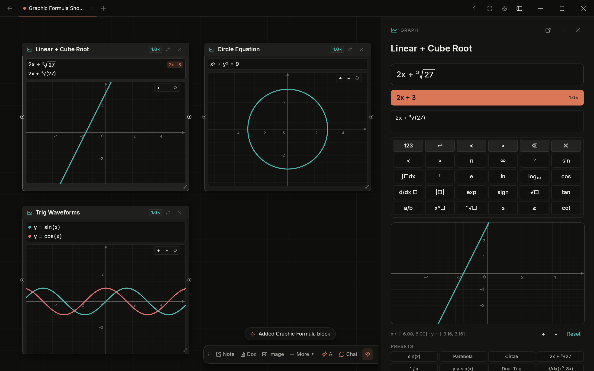
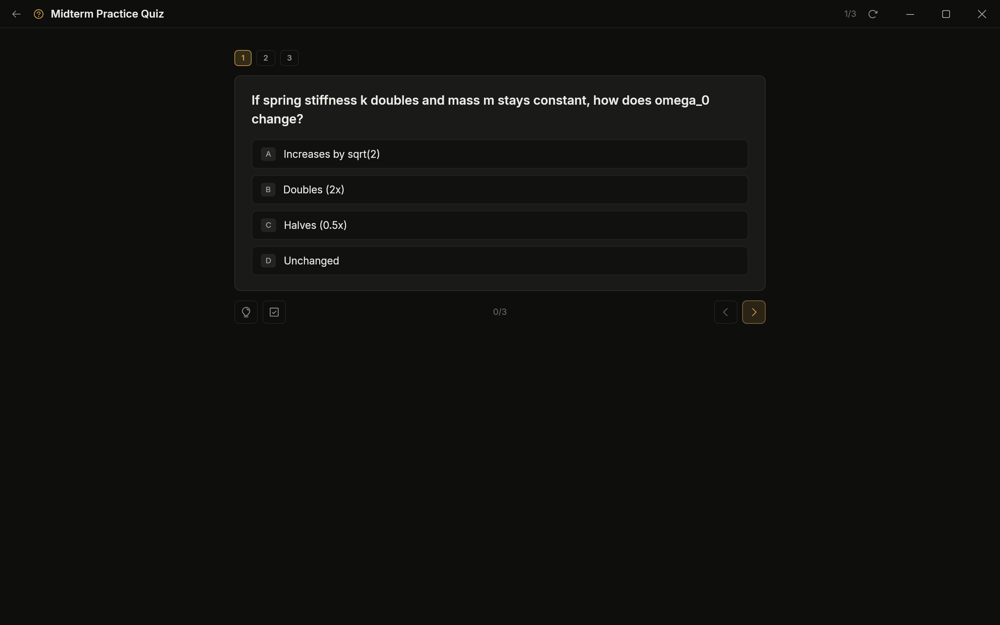
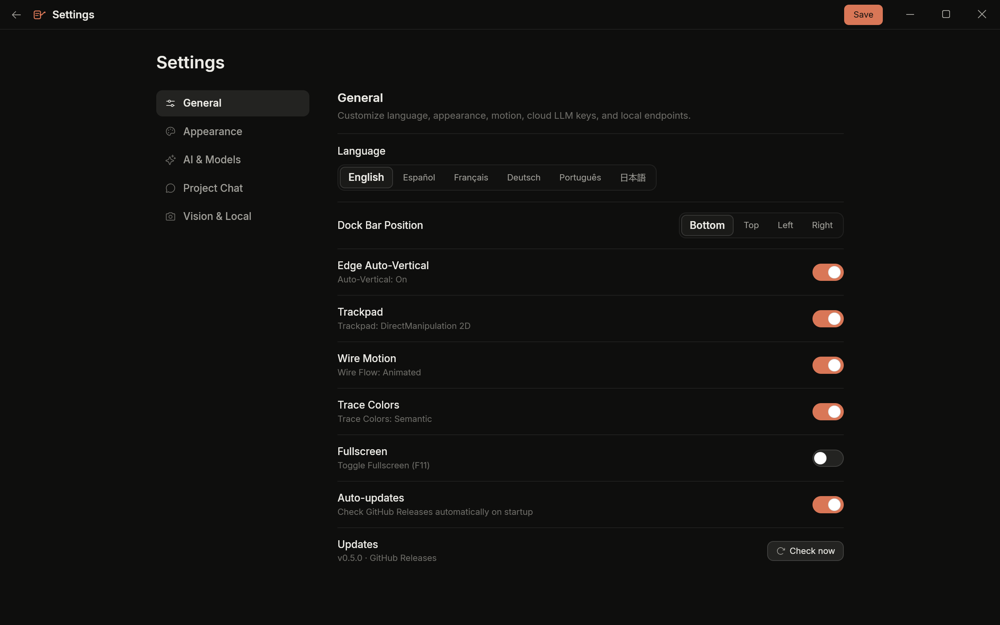

Core Features
Dashboard, Multi-Project Tabs & Starter Templates

- Workspace Management: Search existing
.studynodesbundles, group projects into custom collections, rename or delete projects, and export/import.studynodeszip archives. - Multi-Project Tabs: Keep multiple study projects open simultaneously in the top tab bar without losing camera position, selection, or draft edits.
- Rich Starter Examples: Launch immediately into pre-built Literature (Transformer architecture), Exam Prep (harmonic motion & calculus), or Concept Map (synaptic plasticity) knowledge graphs, or start from a Blank canvas.
Infinite Canvas, Framed Sections & Semantic Wires

- Smooth Camera Navigation: Pan with click-drag, middle-mouse,
Space+drag, or native 2D Windows Precision Touchpad gestures; zoom smoothly anchored to cursor coordinates. - Framed Sections: Organize related cards inside labeled, color-tinted group frames (
Sectionnodes). Dragging a section moves all contained cards together; sections can also pop out into a dedicated window or export to a high-DPI PNG screenshot. - Typed Cubic Bézier Wires: Connect any node's output socket to another node's input socket with directional arrowheads, midpoint relation badges (
supports,contradicts,derived_from,explains,example_of,relates_to, or custom labels), per-trace semantic colors, and animated GPU flow pulses. - Movable Dock: Anchor the floating creation dock to the bottom, top, left, or right edge—or drag it freely into vertical icon-only mode.
18 Study Node Types
Every node card lives on the same spatial coordinate plane and can be wired into causal chains, exam drills, or reading clusters.
| Node Kind | Purpose | Key Capabilities |
|---|---|---|
| Note | Markdown study card | Headings, lists, tables, code blocks, inline editing & scrolling |
| Document | File & syllabus reader | PDF, DOCX, ODT, PPTX, XLSX, EPUB, HTML, RTF, CSV, TXT, MD |
| Image | Visual diagrams & figures | Frameless or framed mode, resizing, OCR & translation extraction |
| Text | Floating canvas headings | Borderless typography with Sans/Serif/Mono/Display/Hand styles |
| Formula | 2D mathematical expressions | Multi-page math keyboard (123/f(x)/abc/αβγ), fraction/root layout & live evaluation |
| Graph Formula | 2D plot & implicit solver | Plots y = f(x), multi-curve expressions, implicit curves, and inequalities |
| Flashcard | Spaced recall card | Front/back flip view with mastery ratings (new, again, good, easy) |
| Quiz | Multi-question practice deck | Inline or full-screen Popout overlay, Easy & Hard modes, hints, and question/answer images |
| Sequence | Ordered procedural steps | Step badges (Step 1, Step 2, ...) and chained step spawning |
| Checklist | Interactive task card | Clickable Markdown - [ ] / - [x] items directly on the canvas |
| Excerpt | Source quotation card | Deep-linked back to exact source Document node and page |
| Concept | Core topic anchor | Topic hub for concept maps and semantic clusters |
| AI Synthesis | LLM-generated summary | Cross-node synthesis generated from selected neighborhoods |
| Section | Spatial group container | Framed area or banner with group drag, pop-out, and PNG export |
| Calendar | Study schedule & planner | Month and 7-day Week views, timed events, day notes, linked cards |
| Video | Video study card | Local MP4/WEBM playback or WebView2 embeds (YouTube, Vimeo) with timestamps |
| Audio | Audio & subtitle card | Local/stream playback, .srt/.vtt parsing, auto-transcription & timestamps |
| Drawing | Freehand sketch canvas | Multi-color vector strokes, eraser, and OCR/formula recognition |
2D Mathematical Equations & Interactive Plotter

- Structured 2D Typesetting: Expressions such as fractions (
(a+b)/c), nth roots (root(n, x)/√x), exponents, subscripts, summations, integrals, logarithms, and Greek symbols render as stacked 2D notation in both canvas cards and the sidebar inspector. - Multi-Page Keypad: Switch between numbers/operators (
123), calculus/trig/logic functions (f(x)), Latin letters (abc), and Greek symbols (αβγ), or toggle raw LaTeX/ASCII input (\alpha,\frac{a}{b},\sqrt{x}). - Live Symbolic Readout: Automatically evaluates arithmetic and simplifies algebraic expressions (e.g.
2x + root(3, 27) → 2x + 3) in a highlighted result banner. - Interactive Plotter: Renders explicit
y = f(x), stacked systems, implicit curves (circles and conics via marching squares), and inequalities with mouse-wheel zoom and pan per card.
Active Recall: Flashcards & Full-Screen Quizzes

- Inline or Full-Screen Popout Quiz: Run quizzes directly inside a canvas node (
Regular) or launch a centered full-screen overlay (Popout). - Easy vs. Hard Difficulty Modes: Easy lets you pause and return to the canvas scheme anytime to check notes and resume later; Hard locks you into the quiz until completed or until you press Give Up.
- Rich Question Decks: Supports multiple-choice or free-response prompts, progressive hints, detailed answer explanations, and attached images on both questions and answers.
Reader, Media, AI Synthesis & Settings
Multi-Format Reader & OCR
Built-in reader supports PDF (hayro Continuous / Two-Page / Single-Page layouts), DOCX, ODT, PPTX, XLSX, EPUB, HTML, RTF, CSV, Markdown, and images with content-addressed SHA-256 asset ingestion. Includes offline PP-OCRv5 ONNX extraction, Cloud Vision API support, and multi-backend translation via Ollama or cloud APIs.
Video, Audio, Calendar & Drawing
Play local videos/audio or YouTube, Vimeo, and Spotify embeds inside WebView2 with clickable timestamp bookmarks and .srt/.vtt subtitles. Plan deadlines in Month or 7-day Week views on Calendar cards, or sketch freehand vector diagrams directly on the canvas.
AI Canvas Synthesis & Project Chat
Select clusters of nodes to generate cross-node summaries and proposed ("ghost") connections with one-click Accept/Dismiss badges, or chat per project with optional Canvas Actions supporting full undo/redo across Gemini, OpenAI, Anthropic, OpenRouter, Groq, DeepSeek, and Ollama.
Themes, Languages & Auto-Updates
6 themes (Warm Charcoal, Dark, Light, Tokyo Night, Solarized Dark, Solarized Light), 6 UI languages (EN, ES, FR, DE, PT, JA), sliding switches, segmented controls, and automatic GitHub Releases checking with atomic binary replacement.

Technical Architecture
| Crate | Responsibility |
|---|---|
crates/studynodes-graph | UI-agnostic core: Node, Edge, Camera, CubicBezier, GraphPatch diff engine, CommandHistory undo/redo, and atomic .studynodes bundle persistence. |
crates/studynodes-llm | Bounded 1-hop context serialization, canvas-action prompt builder, forgiving JSON extraction, and Gemini / OpenAI / Anthropic / Mock clients. |
crates/studynodes-vision | Offline PP-OCRv5 ONNX pipeline (oar-ocr), image contrast preprocessing, Cloud Vision clients, and Ollama / Gemini / MyMemory translation. |
crates/studynodes-app | Native Rune GPU desktop application, math AST/plotter, reader, quiz/calendar/media/drawing views, DirectManipulation touchpad, WebView2 host, and auto-updater. |
crates/studynodes-installer | Self-contained per-user Windows installer & uninstaller (studynodes-setup) embedding studynodes.exe and generating Start Menu & Desktop shortcuts. |
Rendering & Zero-Rebuild GPU Pipeline
Pan (live_offset), cursor-anchored zoom (live_scale), and traveling wire pulses (live_trim) update GPU uniforms directly via tx.live_only() without rebuilding the view tree or running Taffy layout. After 30s without user input, animation timers stop so Rune enters window::rest (0% idle CPU/GPU wakeups) and reclaims GPU layer targets. Viewport culling, low-zoom title LOD below 0.48x, rune::memo subtree caching, and bounded decode caches keep long sessions smooth.
Atomic Storage in Documents\StudyNodes
User bundles and reader_prefs.json live in <Documents>\StudyNodes\ (resolved via SHGetKnownFolderPath, with automatic non-destructive first-run migration from legacy ./study_projects). Background writes serialize to project.json.tmp, call sync_all(), and atomically rename to project.json while pruning unreferenced assets in assets/.
Formula AST & Marching Squares Plotter
A recursive-descent parser converts ASCII, Unicode math, and LaTeX shorthands into an AST rendered with stacked fractions, dynamic radical bars, exponents, and subscripts. Live readouts simplify arithmetic/linear expressions, while plots adaptively sample discontinuities and extract implicit contours and inequality shading via grid marching squares.
Platform Integrations & Self-Updater
Windows Precision Touchpad support uses COM IDirectManipulationViewport for unlocked 2D diagonal pan and pinch. WebView2 embeds serve an ephemeral localhost origin host. Updates check GitHub Releases, validate PE MZ headers, perform atomic .exe → .old → .new binary replacement with rollback, and clean up .old on relaunch.
Installation & Building from Source
Download StudyNodes-Setup-v0.6.0-windows-x86_64.exe (guided per-user installer with shortcuts and uninstaller registration) or the standalone studynodes-v0.6.0-windows-x86_64.exe from GitHub Releases, or build locally from source:
# Run the desktop application
cargo run -p studynodes-app
# Run all workspace unit, UI, and integration tests
cargo test --workspace --no-fail-fast
# Capture headless GPU UI screenshots from showcase scenes
cargo run -p studynodes-app -- --snap docs/screenshots/exam-template.png --scene template_exam
# Build release binary and self-contained Windows installer
powershell -ExecutionPolicy Bypass -File scripts\build-installer.ps1License
PolyForm Noncommercial License 1.0.0 + Commercial Restriction Agreement
StudyNodes is licensed for noncommercial personal, educational, and research use under the
PolyForm Noncommercial License 1.0.0. In addition, under the specific project
agreement: no company or individual may use this project, its binaries, derivative works,
or its source code for lucrative or commercial purposes without a previous written agreement
with the project owner (inziz).